Position Available at Startup
The single-turn absolute angle can be read immediately. This is useful for joints and steering modules that should recover state quickly without a homing routine.
No homing waitTTL ABSOLUTE ENCODER
A compact 12-bit absolute magnetic encoder for robot joints, reducer output shafts, grippers, and leader arms. Read the real joint angle and speed directly over a TTL bus. Calibration settings are retained after power-off, so the current joint angle is available immediately after startup.
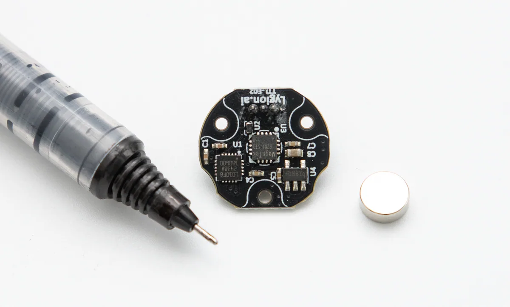
WHAT IT SOLVES
TTL Encoder E02 gives the controller real mechanism feedback instead of only estimating from the motor side. It powers up with a known absolute angle, keeps calibration settings after power-off, and can share the same TTL bus with other robot devices.
The single-turn absolute angle can be read immediately. This is useful for joints and steering modules that should recover state quickly without a homing routine.
No homing waitMount it near a timing pulley, gear, reducer output, or inside the joint to measure the angle after backlash, belt stretch, and transmission error.
Better reducer-side feedbackMultiple encoders and other TTL bus devices can share one communication line, which keeps robot arms, grippers, and steering modules easier to wire and expand.
Control all bus devices through one linkThe compact round board and HC1.25 connector fit small robot mechanisms where sensor space is limited.
Designed for embedded mountingBOARD DETAIL
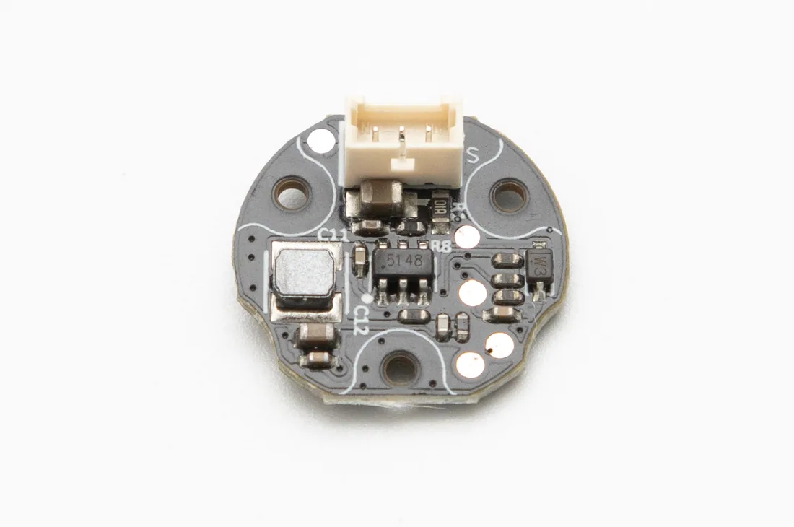
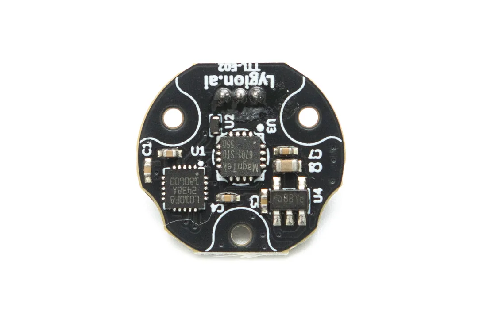
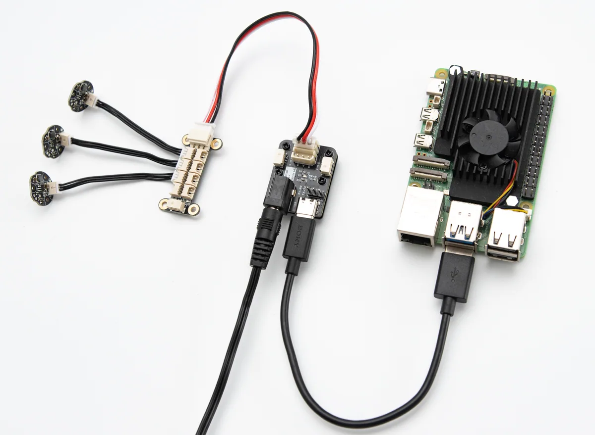
TTL BUS SYSTEM
Use TTL Adapter (A), a Hub Board, or a controller with single-wire TTL to place multiple encoders and other bus devices on the same communication link. After assigning each device a unique ID, a host or MCU can read and control them centrally.
FD SOFTWARE
The Wiki provides FD software setup, Python quick start, and C++ / Arduino examples. FD software helps separate wiring, power, and software issues, so the first bring-up is much less frustrating.
Connect E02 through TTL Adapter (A) or another USB-to-single-wire-TTL controller, then use FD software to search for the device. Once the readings are stable, integrate the encoder with your own project using the Python, C++ / Arduino examples in the Wiki.
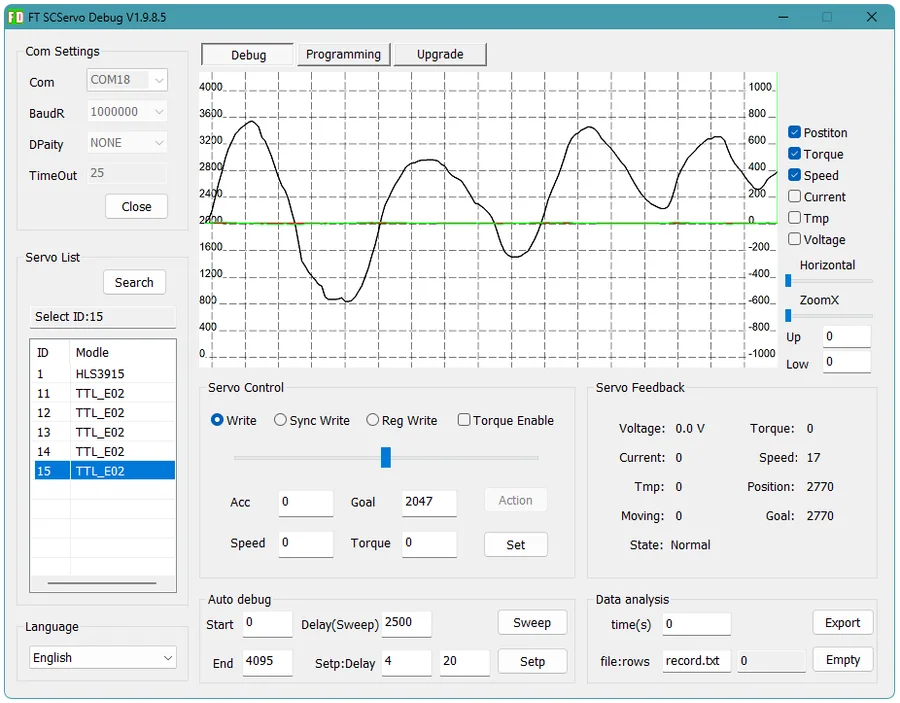
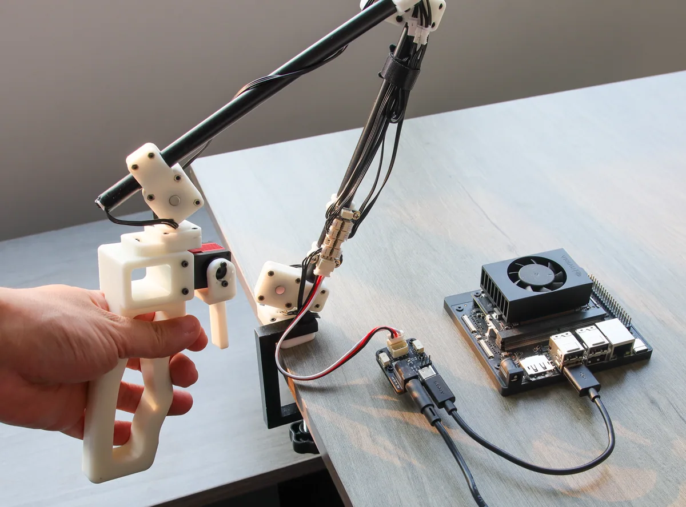
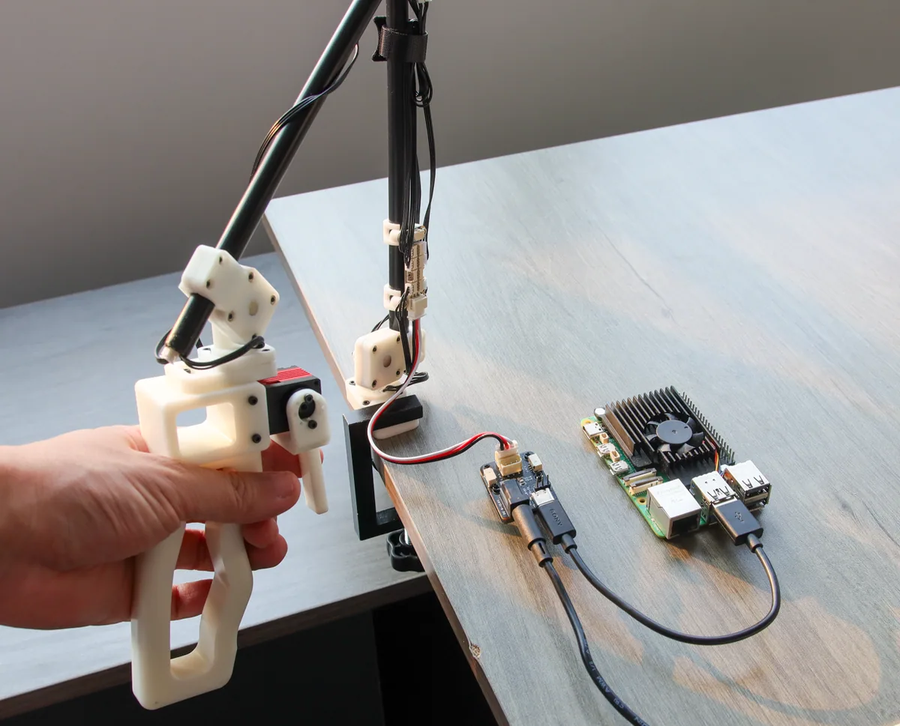
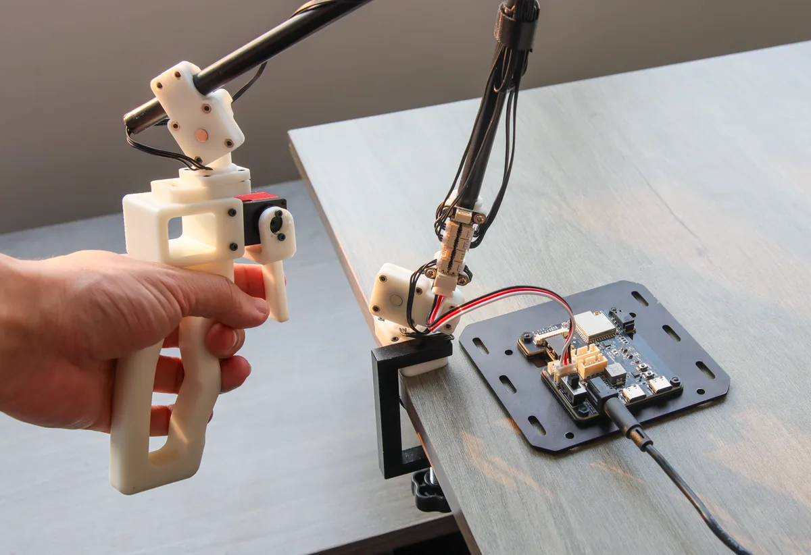
MAGNET INSTALLATION
TTL Encoder E02 measures angle by sensing the rotation of a radial magnet. For reliable readings, align the magnet rotation axis with the center of the encoder IC and keep the magnet-to-IC distance around 0.8-1.5 mm. A stable mechanical mount gives more stable feedback.
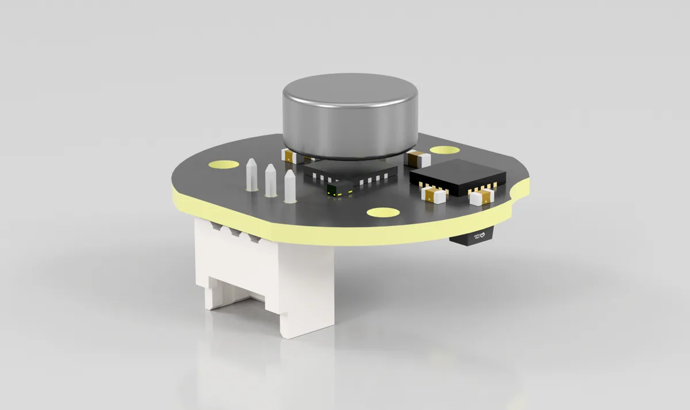
APPLICATIONS
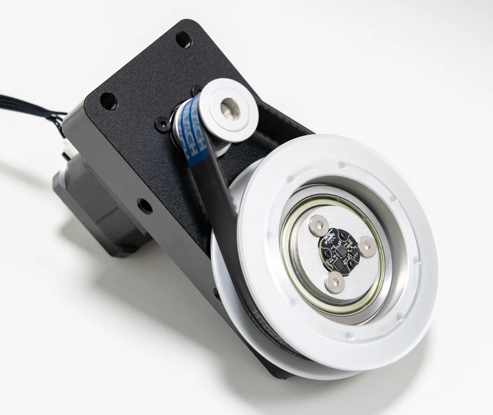
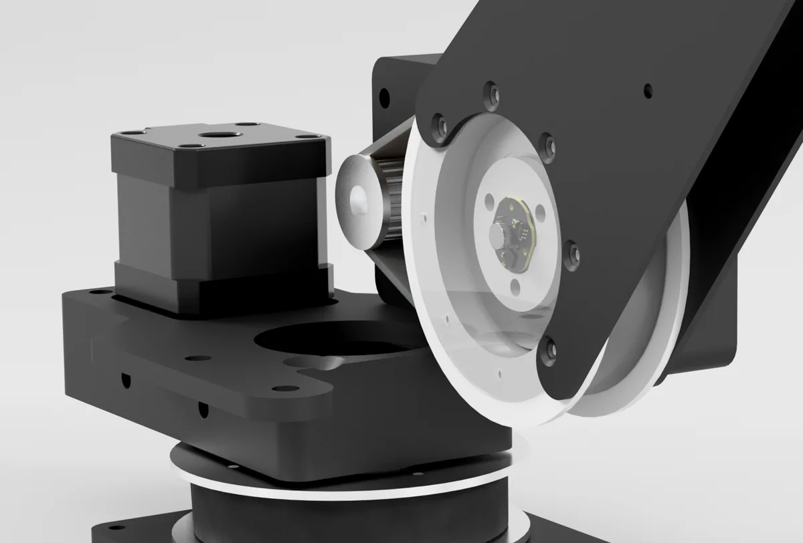
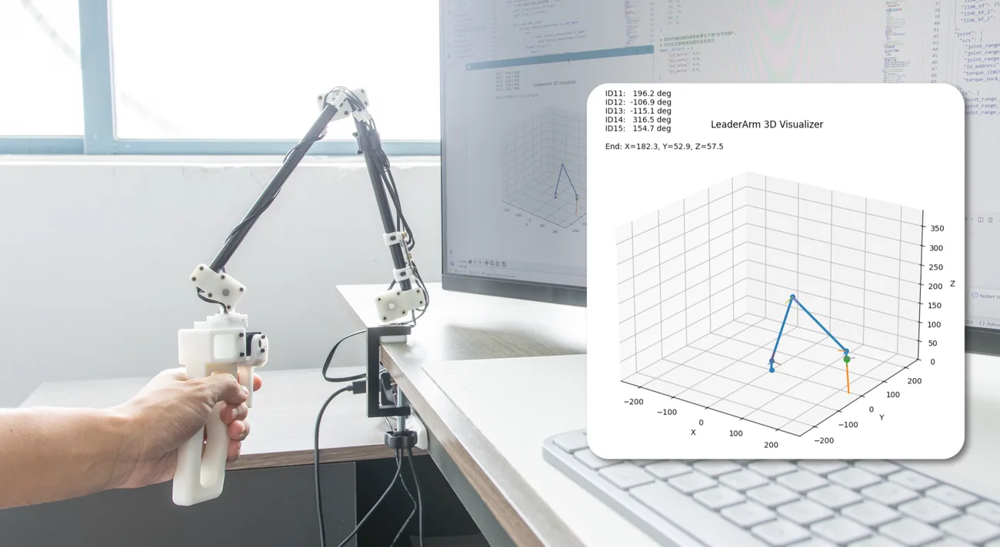
SPECIFICATIONS
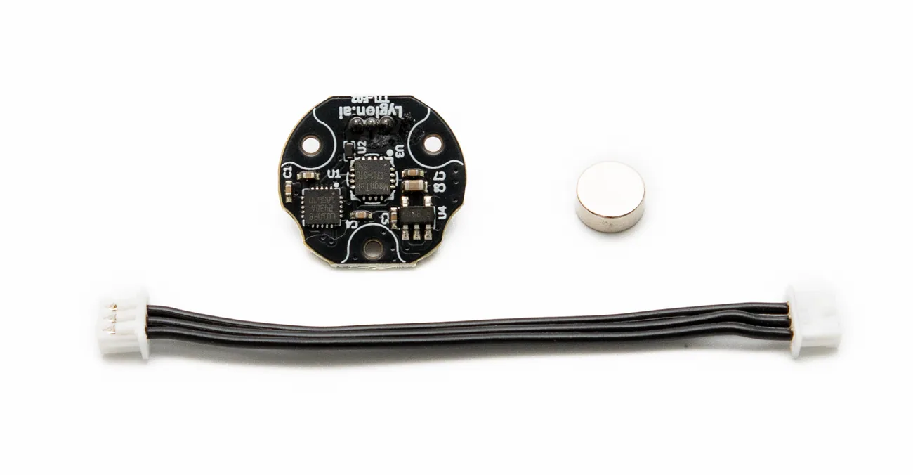
PACKAGE
DOCUMENTATION
Use the product Wiki for setup tools, SDK examples, wiring notes, and development tutorials.